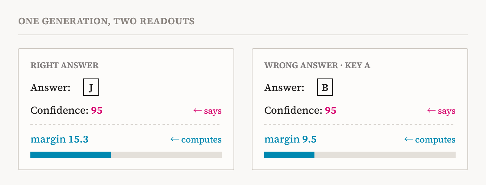
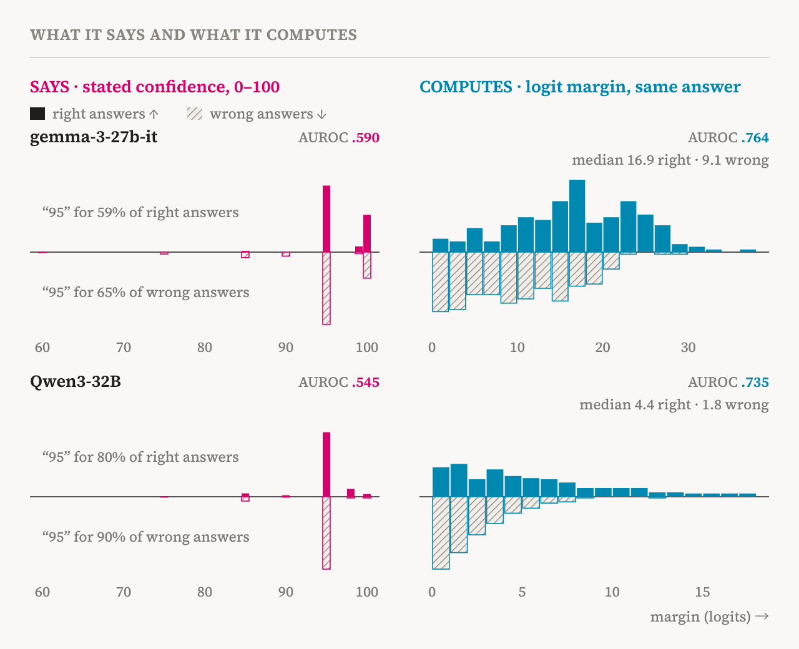
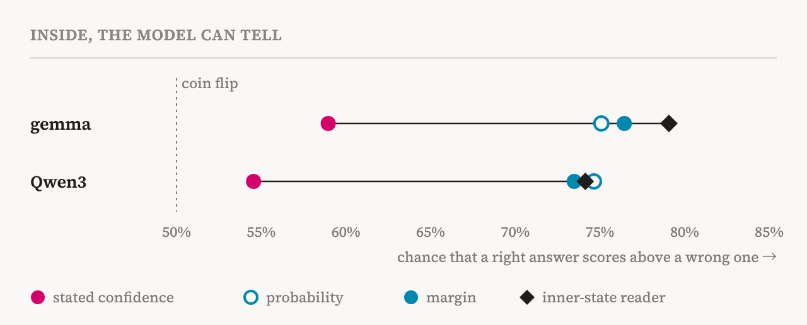
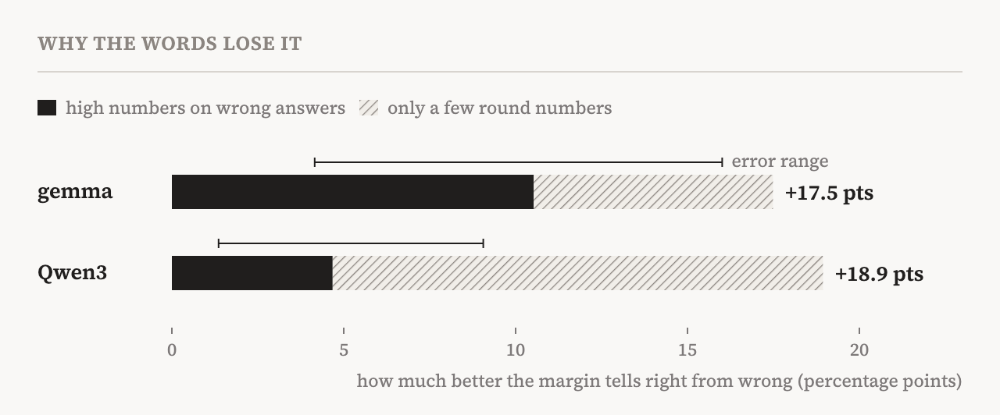
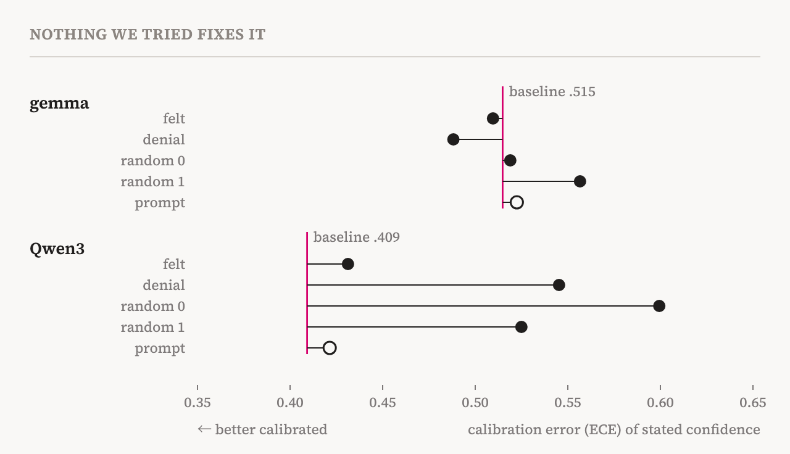

Imagine a friend who always says “I'm 95% sure,” whether they turn out right or wrong. Their confidence would tell you nothing. The AI models in this study behaved like that friend. We gave two open AI models, gemma and Qwen3, 400 hard multiple-choice questions and asked how sure they were of each answer. gemma said it was 96% sure on average but got only 44% right. Qwen3 said 95% and got 54% right.
Look inside the models, though, and the story changes. They could tell fairly well when their own answer was right and when it was wrong. They just didn't put that into words.
Reading the words and the inside together
The questions come from a hard exam that covers many subjects (MMLU-Pro), with ten options per question (A–J). After picking an answer, the model says how sure it is with a number from 0 to 100. That is its stated confidence.
At the same moment, we also read the inside of the model. When an AI picks an answer, it gives every option a score and answers with the top one. So how far the top option leads the runner-up, its margin, shows how sure the model was inside. A big margin means it chose without hesitation; a small one means it was torn between two options.
In the two questions in Fig. 1, the model said “95” both times, but its margin was 15.3 on the one it got right and 9.5 on the one it got wrong.

The words are almost always “95”
Across all 400 questions, the difference is plain. The model said “95” for most answers, right or wrong: gemma for 59% of its right answers and 65% of its wrong ones, Qwen3 for 80% and 90%. From the stated confidence alone, you cannot tell which answers were right.
The margin, by contrast, was clearly bigger on right answers. The middle values were 16.9 for right answers against 9.1 for wrong ones in gemma, and 4.4 against 1.8 in Qwen3.

This difference can be summed up in one number. Pick one right answer and one wrong answer at random, and check which got the higher confidence. The score is the chance that the right answer comes out ahead: 50% is a coin flip, 100% is perfect.
| What tells them apart | gemma | Qwen3 |
|---|---|---|
| Stated confidence | 59.0% | 54.5% |
| Inside margin | 76.4% | 73.5% |
| Inside margin, only answers stated 90 or above | 76.5% | 74.1% |
Stated confidence does only a little better than a coin flip. The inside margin does far better. The last row matters most. The model called about 95% of its answers “90 or above”, and even among those, the margin still told right from wrong. In words, every one of them was “sure”; inside, the model knew which ones were shaky. When we re-drew the questions 3,000 times, the difference stayed far too large to be chance.
Inside, the model can tell
The margin isn't the only signal. The probability the model gave its answer did about as well. We also built a simple reader that looks at the model's inner state just before it writes the answer, thousands of numbers inside the model, and guesses whether the answer will be right. Tested only on questions it had never seen, it scored 79.1% and 74.1% on the same measure as the table. So the signal that “this might be wrong” is already there before the model writes a single word. And since the reader is simple, the real signal may be stronger.

Why the words lose it
Stated confidence fails for two reasons. First, the model uses only a few round numbers. Across 400 questions, gemma used just 7 different numbers, mostly 95 and 100. A ruler with only a few marks can't measure small differences. Second, it puts the high numbers on wrong answers too.
We also asked which reason matters more. If we let the inside margin use only the same few round numbers, we can separate what is lost to round numbers from what is lost by putting high numbers on wrong answers. High numbers on wrong answers explain 60% of the difference in gemma and 25–30% in Qwen3. The rest comes from the round numbers.

Can it be fixed?
We tried two ways to change the stated confidence. One nudges the activity inside the model in a chosen direction, which is called steering. We used two directions from earlier work, the way the model talks when it describes its own processing as something ‘felt’ and the way it talks when it denies that, plus two random directions for comparison. The other simply tells the model, in its instructions, to answer with confidence.
Neither reduced the gap between stated confidence and actual accuracy beyond chance. The only clear changes made it worse. Steering did move the probabilities inside the model, but the number it said did not improve.

“Learn to listen to what models think, not just what they say.”
Why “self-misrepresentation”
The title's “self-misrepresentation” means the model misreports its own state. This is not a mistake caused by missing information. The model holds the information that it is unsure; that information just doesn't make it into its words.
Earlier interviews with the same two models found a similar gap. The models have a way of describing their own processing as something ‘felt’, which their default account of themselves denies. Overconfidence is the same gap, showing up in confidence. The models may have been trained not to tell, and neither steering nor instructions brought it out.
What it means
In the two models we studied, the confidence number an AI states told us almost nothing about whether its answer was right. The signals inside the model were far more reliable. So to judge whether to trust an AI's answer, it is safer to read what happens inside than to try to fix what it says.
The study has limits. It covers two models and one way of asking for confidence, and each steering direction was tried at one strength. The reader was run in a separate pass, and because it is simple, it shows only a minimum. The results show that the models resist intervention, not where in training that habit comes from. And the name ‘felt’ refers to a way of talking and a pattern of inner activity, not to the model actually feeling anything.